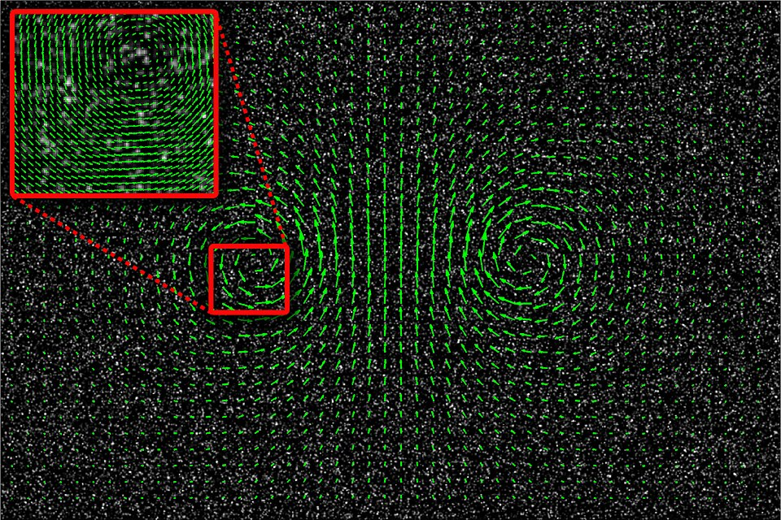

Mirar desde un punto fijo o viajar con el agua: las descripciones de Euler y de Lagrange
Para describir el movimiento de una pelota alcanza con seguirla: dónde está en cada instante. Pero un río no es una pelota. Está formado por una cantidad enorme de porciones de agua que se mueven cada una a su manera. ¿Cómo se describe algo así? La mecánica de fluidos tiene dos respuestas, que llevan los nombres de Euler y de Lagrange.
En la descripción euleriana no se sigue a nadie: se mira qué pasa en cada punto del espacio. El fluido se describe con campos, como la densidad ρ(x, t) y la velocidad u(x, t), que dicen qué densidad y qué velocidad hay en el punto x en el instante t [1]. David Tong, de la Universidad de Cambridge, lo explica así: u(x, t) es la velocidad que medirían sensores fijos colocados en el fluido, no sensores que se dejaran llevar por él [1].

Un ejemplo cotidiano son los mapas del pronóstico con flechitas de viento: cada flecha dice hacia dónde y con qué velocidad sopla el aire en ese lugar [2]. OpenStax muestra uno así, con los vientos del huracán Arthur en 2014 [2].
En la descripción lagrangiana se hace lo contrario: se imagina el fluido dividido en «parcelas», se marca cada una y se sigue su trayectoria, como si fueran partículas de la mecánica clásica [1]. Tong aclara que estas parcelas son una ficción útil: las moléculas de verdad se mueven en todas direcciones, a veces a gran velocidad, sin prestarle mucha atención al campo de velocidades [1]. Pero pensar en una porción de fluido que conserva su identidad mientras se mueve da mucha intuición [1].
La trayectoria de una parcela sale del campo de velocidades: en cada instante, la parcela se mueve con la velocidad que el campo tiene en el lugar donde ella está [1].
El puente y el bote: pararse en un puente y anotar a qué velocidad pasa el agua debajo es la descripción euleriana. Subirse a un bote sin remos y anotar adónde te lleva la corriente es la lagrangiana. Los dos describen el mismo río; uno mira un lugar, el otro sigue a un viajero.
Supongamos que queremos saber cómo cambia la temperatura de una parcela de agua mientras viaja. El campo de temperatura dice cómo cambia en un punto fijo, pero la parcela además se mueve hacia lugares que pueden estar más fríos o más calientes. Tong muestra que el cambio total tiene dos partes [1]:
Esa combinación se llama derivada material, y Tong la describe como un puente entre la descripción euleriana, en un punto fijo, y la lagrangiana, que se mueve con el fluido [1]. John Cimbala, de la Universidad Estatal de Pensilvania, la usa para calcular la aceleración de una partícula de fluido a partir del campo de velocidades [3]. El segundo término explica algo sorprendente: aunque en cada punto la velocidad no cambie con el tiempo, una parcela puede acelerar, porque se mueve hacia lugares donde la velocidad es distinta. Es lo que pasa en el flujo estacionario por una tobera.
Por qué se usa casi siempre Euler: Tong escribe todas las ecuaciones de su curso en la descripción euleriana, aunque usa la lagrangiana para la intuición [1]. Cimbala hace una comparación útil: así como la derivada material pasa de una descripción a la otra para un pedacito de fluido, el teorema del transporte de Reynolds hace lo mismo para una región grande [4].
Un fluido se puede describir mirando lo que pasa en cada punto o siguiendo a cada parcela. La descripción euleriana da campos, y es la que usan las ecuaciones; la lagrangiana da trayectorias, y es la que da intuición. La derivada material las conecta, y explica por qué una porción de agua puede acelerar aunque el flujo, visto desde la orilla, no cambie.
Pregunta para la comunidad: Un globo meteorológico que se suelta y sube llevado por el viento, ¿mide el aire con la descripción euleriana o con la lagrangiana? ¿Y una estación meteorológica fija en una plaza?